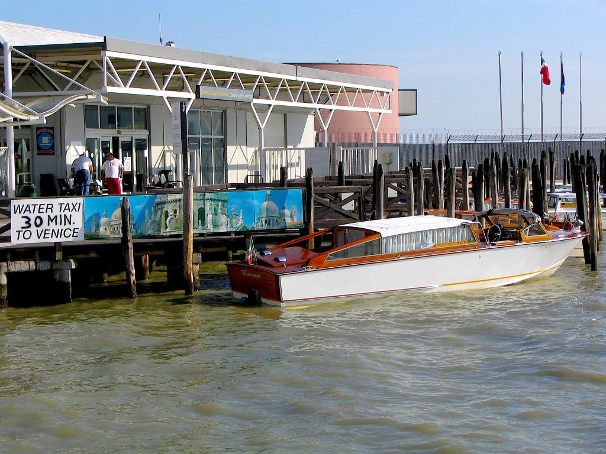

Water taxi outside the Venice airport
Venice- Marco Polo (VCE) is 12 km (7.5 miles) from the city of Venice (Venezia). As you may already know, no cars can enter Venice. This is not because they are prohibited, but because they cannot physically fit in the city. Venice is on the water and is made of bridges and small pedestrian streets (called calli). All cars must be parked directly outside the city, in Piazzale Roma, where there is the main parking lot (parcheggio). This is also the arrival point of all buses and taxicabs. However, if you need to reach Venice from the airport and would like to experience something really unique, consider these options:- The public boat to Saint Mark’s Square (or other Venetian destinations) for €15 per person. You can buy the tickets either inside the airport or on board.
- The water taxi. If you choose this solution, then budget around €100 (for up to 5 people).